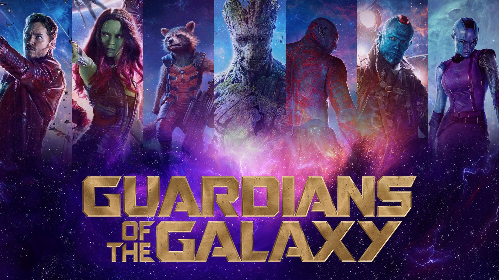
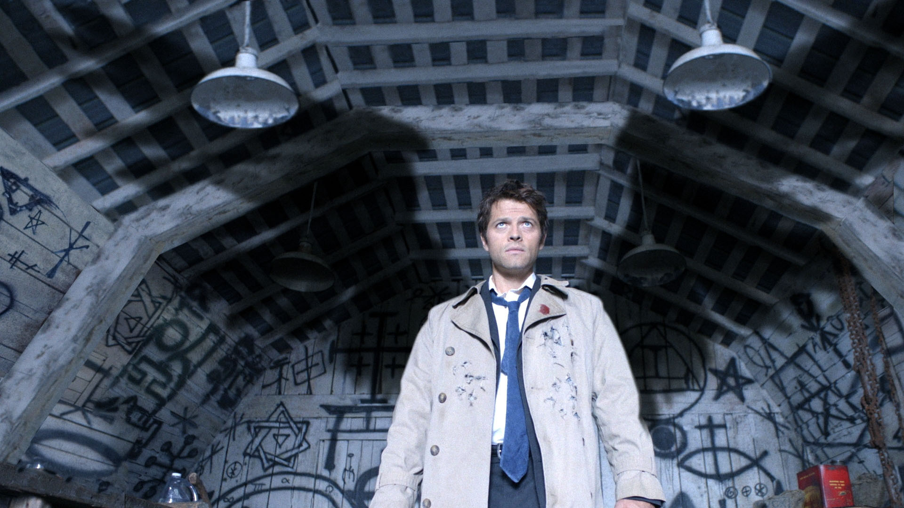
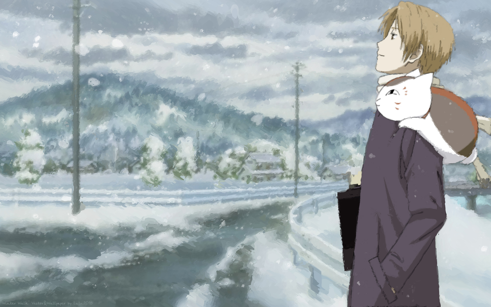

Film

Sinopsis Guardians of The Galaxy
Di pelosok luar angkasa, seorang pilot Amerika dengan nama Peter Quill menemukan dirinya sebagai objek perburuan setelah mencuri sebuah bola mustika milik Ronan sang penjahat.
Dalam rangka untuk menghindari Ronan, Quill dipaksa melakukan gencatan tak mudah dengan sekelompok orang aneh terdiri dari Gamora, Rocket, Drax dan Groot.
Tapi ketika Quill menemukan kekuatan sejati dari bola tersebut dan ancaman yang dibawanya untuk alam semesta, ia pun akhirnya harus menghimpun saingannya, berdiri dengan putus asa - bersama nasib untuk keseimbangan galaksi.
TV Series

Sinopsis Supernatural
Dean dan Sam Winchester adalah dua kakak beradik yang hidup di jalan bersama ayah mereka, John. Setelah ibu mereka, Mary tewas secara misterius, mereka telah dilatih oleh John untuk berburu paranormal supaya mereka dapat membalaskan dendam pada siapapun yang menyebabkan kematian Mary.
Di awal musim, Sam menjadi mahasiswa suatu universitas karena dia tak ingin kembali hidup di dunia paranormal, tetapi setelah tunangannya, Jessica Lee Moore tewas dengan cara yang sama seperti Mary,
dia akhirnya bergabung dengan Dean.
Dean dan Sam berkeliling Amerika Serikat untuk menyelidiki kasus paranormal serta mencari ayah mereka yang memisahkan diri dari anak-anaknya.
Anime
Anime adalah animasi asal Jepang yang digambar dengan tangan maupun menggunakan teknologi komputer. Kata anime merupakan singkatan dari animation dalam bahasa Inggris, yang merujuk pada semua jenis animasi. Di luar Jepang, istilah ini digunakan secara spesifik untuk menyebutkan segala animasi yang diproduksi di Jepang.
One Piece

Luffy adalah pemakan buah iblis Gomu Gomu no Mi sehingga ia menjadi manusia karet. kemampuan ini membuat tubuhnya memiliki atribut yang sama dengan karet, seperti melar, peredam listrik, dsb.
Luffy memiliki cita-cita menjadi Raja Bajak Laut setelah bertemu dengan Shanks Si Rambut Merah yang singgah di pulau kelahirannya, Fusha. Topi jerami yang menjadi ciri khasnya adalah pemberian dari Shanks dan dia berjanji akan memberikan topi itu kembali kepadanya saat mereka bertemu kembali.
Natsume Youjinchou

Sejak kecil, Takashi Natsume telah memiliki kemampuan untuk melihat arwah-arwah yang menurun dari neneknya, Reiko Natsume.
Kemampuan tersebut membuatnya menjadi tidak memiliki teman karena anak-anak seumurannya menganggapnya aneh.
Selain itu, ia juga harus berpindah dari satu kerabat ke kerabat lain sejak kehilangan kedua orang tuanya saat masih kecil.
Sebelum meninggal, neneknya, Reiko, mewariskan padanya sebuah Buku Persahabatan, sebuah buku yang berisi nama-nama arwah yang telah ditaklukan oleh Reiko.
Buku Persahabatan dianggap sebagai salah satu barang yang sangat berharga di dunia arwah, dan banyak arwah -
baik yang baik maupun yang jahat - mengejar Natsume demi mendapatkan buku tersebut.